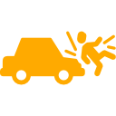

Адвокат по ДТП в Киеве
Произошло ДТП? К великому сожалению, дорожно-транспортные происшествия нередко происходят даже с опытными водителями. Ты ударил или тебя? Возникают разные ситуации. И хорошо еще, если в результате лишь немного пострадал автомобиль. А если нет? Статистика приводит неутешительные цифры.
Паника. Встревоженность. Злость. Боль. Разные негативные чувства становятся следствием ДТП. Адреналин в крови не позволяет трезво оценить ситуацию. В результате принимаются неправильные решения. Тебе это знакомо? Будучи адвокатом по ДТП в Киеве, мне довелось немало такого повидать в своей практике. И это только начало неприятностей. Спустя время многое и самому становится понятно. Все вспоминаешь, вспоминаешь… Приходят сомнения. Думаешь, что нужно было поступить по-другому. Осознаешь, сколько допустил ошибок в показаниях, предпринятых или нет мерах. Хорошая мысля приходит опосля - гласит народная мудрость.
Страховая, взаимодействие с ушлым следователем, судебные заседания – лишь часть того, с чем, наверное, нужно будет столкнуться. И хорошо бы рядом оказался опытный человек, способный принять взвешенное решение. Или думаешь сам правишься? Адвокат по ДТП – специалист узкого профиля, знающий все нюансы дел, связанных с ДТП. Грамотные юридические услуги адвоката по ДТП в Киеве помогут справиться с возникшими проблемами. В твоих интересах обратиться за бесплатной консультацией к адвокату по ДТП и сделать свой выбор.
Не упускай время!